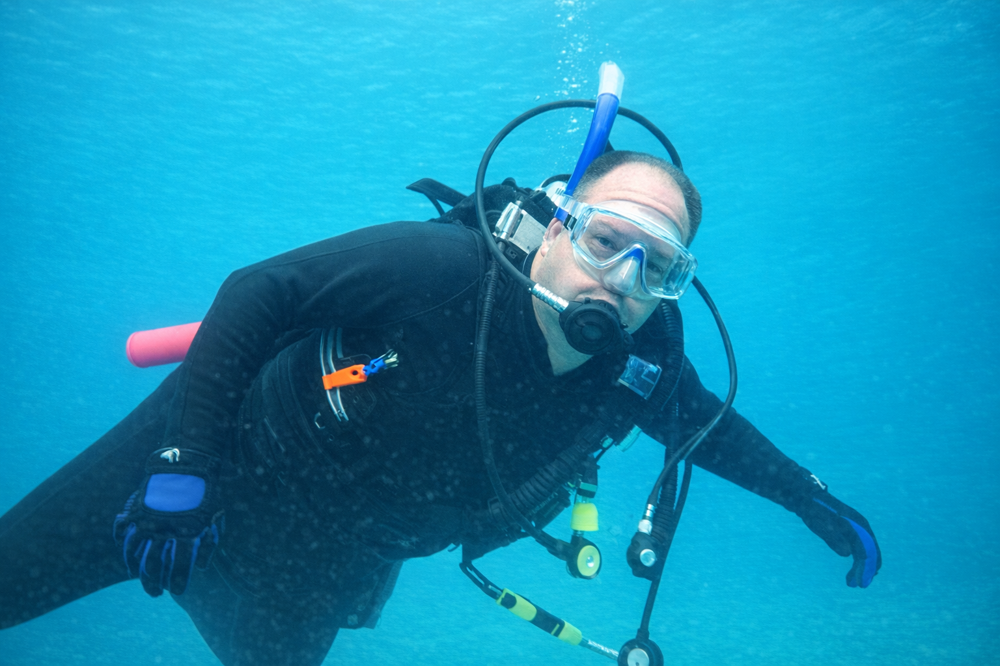
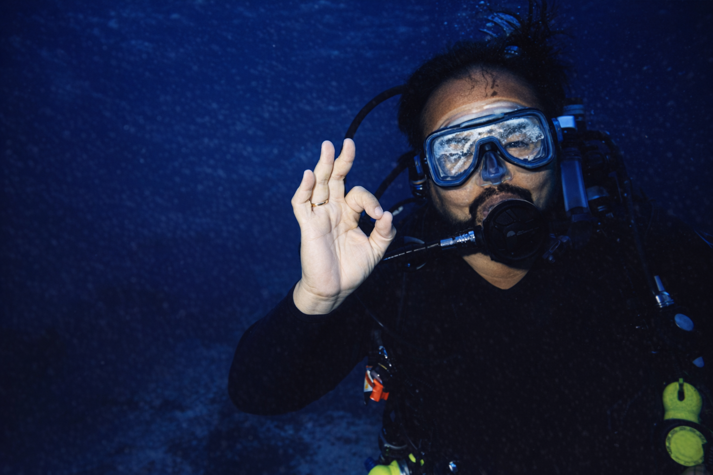
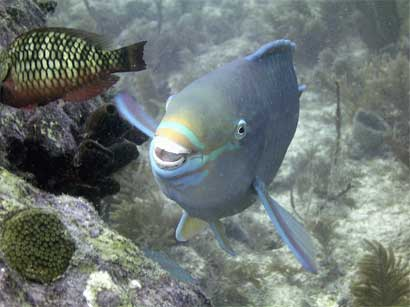
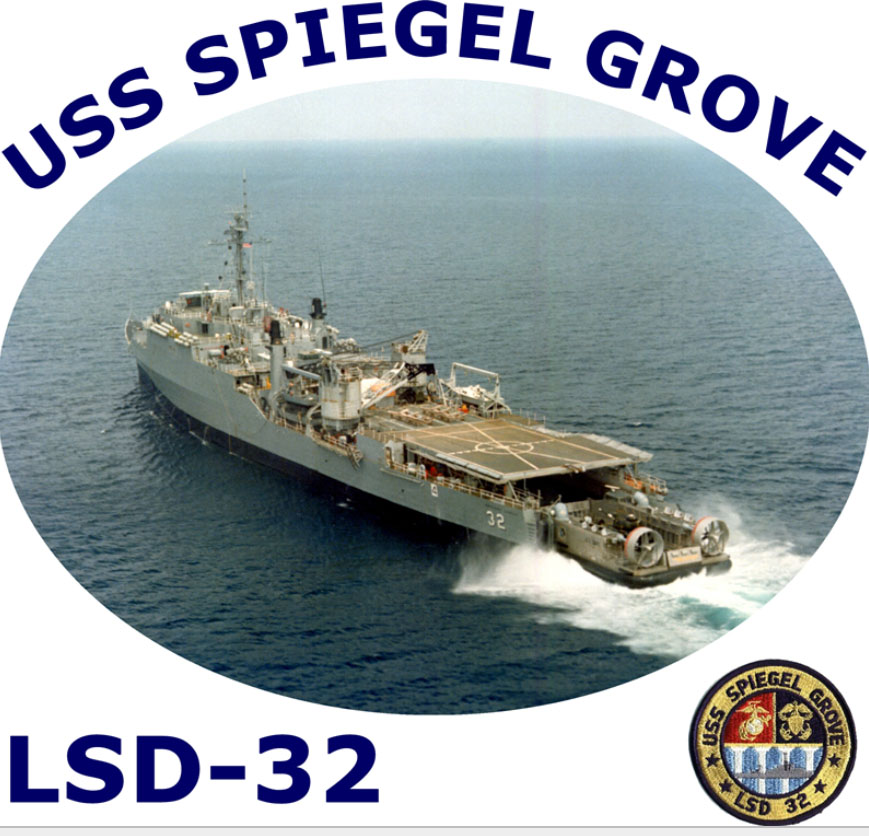
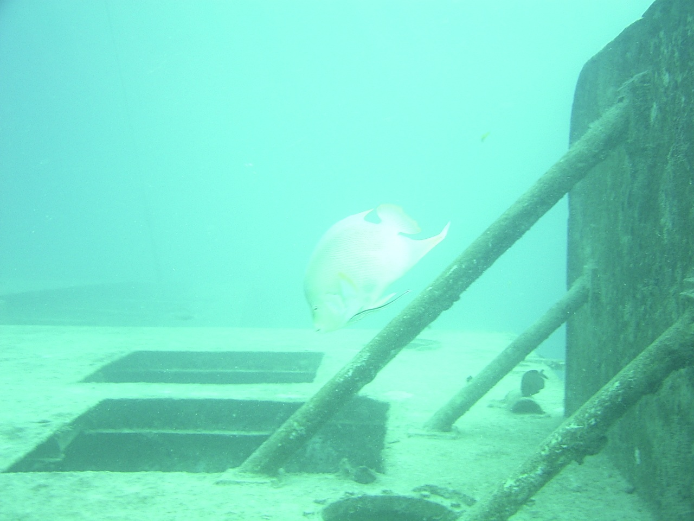

In 2003 I attended a three-day underwater photography event in Key Largo, Florida, sponsored by SEALIFE Camera. Each attendee received a camera — film or digital, your choice — and spent two days in the water putting it to work. Day three was the wrap-up, the reveal, and, as it turned out, the award ceremony.
But I'm getting ahead of myself. Because what made this event unforgettable had nothing to do with the camera. It had everything to do with where we were diving.


Geared up and ready. Advanced divers had a once-in-a-lifetime option for this event.
Advanced divers at the event had the option to dive the USS Spiegel Grove — a 510-foot former U.S. Navy landing ship dock that had been intentionally sunk in May 2002 just off Key Largo as an artificial reef. I was only a year behind her sinking. That's not something you pass on.
Here's the thing about the sinking that makes the whole story richer: it didn't exactly go according to plan. Workers were still aboard when the scuttling process began, and the vessel started taking on water sooner than anticipated. She settled by the stern and rolled over, sinking ahead of schedule. What was supposed to rest upright on the ocean floor ended up lying on her starboard side — and that's exactly how I found her a year later.
The sheer scale was overwhelming. And because she had recently settled, the structure was completely intact — a clear, albeit tilted, snapshot of Navy engineering frozen in time. The site was already becoming a bustling hub for local species, which is exactly why I was down there with a camera.
Parrotfish are, without question, the hardest-working fish on the reef. They have these remarkable, bird-like beaks — fused teeth that let them scrape algae and organic film directly off coral surfaces. Think of them as the reef's full-time cleaning crew. By constantly grazing, they prevent algae from smothering the coral, clearing perfect settlement spots for new coral growth. That relentless snacking keeps the whole neighborhood in balance.
They're also, frankly, hilarious-looking. Bright colors, that enormous beak, constantly working their jaw like they're chewing on something they can't quite figure out. On a massive sideways Navy ship, surrounded by 100+ feet of ocean, there was a parrotfish just absolutely going about its business like none of it mattered.
I pointed the SEALIFE camera and took the shot.

The shot. Taken on the USS Spiegel Grove, Key Largo, 2003. Still my proudest trophy.
When the seminar wrapped on day three, I was presented with the award for the most humorous photo of the event. A goofy parrotfish on a sideways Navy warship, doing what it does — and I was in the right place at the right time with a camera in my hand. It has made an enduring memory that makes me smile every single time I think about it.
Here's the part of the story that sounds made up but absolutely is not.
In July 2005 — three years after her chaotic sinking and two years after my dive — nature and engineering combined to finally right the USS Spiegel Grove. Hurricane Dennis came through the Florida Keys and, in a moment of accidental marine engineering, the storm surge and shifting currents pushed the massive 510-foot vessel toward an upright position.
Following the storm, a team of salvage divers and engineers used large lift bags to provide the final buoyancy needed to settle her squarely on her keel. Today the Spiegel Grove sits upright in about 130 feet of water — a much more accessible and iconic destination than the sideways wreck I explored in 2003.


Hurricane Dennis did what the engineers couldn't — then the salvage crew finished the job. Same ship, entirely different dive.
The parrotfish, presumably, is still down there. Still working. Still doesn't care about any of this.